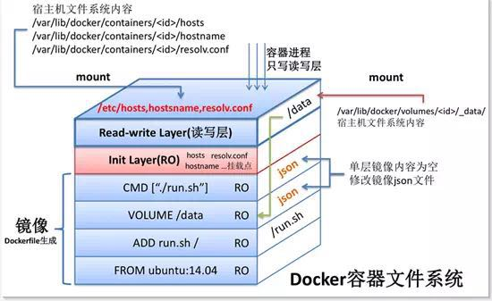

<!DOCTYPE HTML>
<html lang="" >
    <head>
        <meta charset="UTF-8">
        <meta content="text/html; charset=utf-8" http-equiv="Content-Type">
        <title>dockerfile · GitBook</title>
        <meta http-equiv="X-UA-Compatible" content="IE=edge" />
        <meta name="description" content="">
        <meta name="generator" content="GitBook 3.2.3">
        
        
        
    
    <link rel="stylesheet" href="../gitbook/style.css">

    
            
                
                <link rel="stylesheet" href="../gitbook/gitbook-plugin-page-toc/page-toc.css">
                
            
                
                <link rel="stylesheet" href="../gitbook/gitbook-plugin-highlight/website.css">
                
            
                
                <link rel="stylesheet" href="../gitbook/gitbook-plugin-search/search.css">
                
            
                
                <link rel="stylesheet" href="../gitbook/gitbook-plugin-fontsettings/website.css">
                
            
        

    

    
        
    
        
    
        
    
        
    
        
    
        
    

        
    
    
    <meta name="HandheldFriendly" content="true"/>
    <meta name="viewport" content="width=device-width, initial-scale=1, user-scalable=no">
    <meta name="apple-mobile-web-app-capable" content="yes">
    <meta name="apple-mobile-web-app-status-bar-style" content="black">
    <link rel="apple-touch-icon-precomposed" sizes="152x152" href="../gitbook/images/apple-touch-icon-precomposed-152.png">
    <link rel="shortcut icon" href="../gitbook/images/favicon.ico" type="image/x-icon">

    
    <link rel="next" href="docker-composefile.html" />
    
    
    <link rel="prev" href="docker-swarm.html" />
    

    </head>
    <body>
        
<div class="book">
    <div class="book-summary">
        
            
<div id="book-search-input" role="search">
    <input type="text" placeholder="Type to search" />
</div>

            
                <nav role="navigation">
                


<ul class="summary">
    
    

    

    
        
        
    
        <li class="chapter " data-level="1.1" data-path="../">
            
                <a href="../">
            
                    
                    Introduction
            
                </a>
            

            
        </li>
    
        <li class="chapter " data-level="1.2" data-path="../linux/">
            
                <a href="../linux/">
            
                    
                    Linux
            
                </a>
            

            
            <ul class="articles">
                
    
        <li class="chapter " data-level="1.2.1" data-path="../linux/linux-basis.html">
            
                <a href="../linux/linux-basis.html">
            
                    
                    linux basis
            
                </a>
            

            
        </li>
    
        <li class="chapter " data-level="1.2.2" data-path="../linux/linux-filesystem.html">
            
                <a href="../linux/linux-filesystem.html">
            
                    
                    linux filesystem
            
                </a>
            

            
        </li>
    
        <li class="chapter " data-level="1.2.3" data-path="../linux/linux-commands.html">
            
                <a href="../linux/linux-commands.html">
            
                    
                    linux command
            
                </a>
            

            
        </li>
    
        <li class="chapter " data-level="1.2.4" data-path="../linux/linux-filesystem.html">
            
                <a href="../linux/linux-filesystem.html">
            
                    
                    linux filesystem
            
                </a>
            

            
        </li>
    

            </ul>
            
        </li>
    
        <li class="chapter " data-level="1.3" data-path="../awesome/">
            
                <a href="../awesome/">
            
                    
                    Awesome
            
                </a>
            

            
            <ul class="articles">
                
    
        <li class="chapter " data-level="1.3.1" data-path="../awesome/git.html">
            
                <a href="../awesome/git.html">
            
                    
                    git
            
                </a>
            

            
        </li>
    
        <li class="chapter " data-level="1.3.2" data-path="../awesome/gitbook.html">
            
                <a href="../awesome/gitbook.html">
            
                    
                    gitbook
            
                </a>
            

            
        </li>
    

            </ul>
            
        </li>
    
        <li class="chapter " data-level="1.4" data-path="./">
            
                <a href="./">
            
                    
                    Docker
            
                </a>
            

            
            <ul class="articles">
                
    
        <li class="chapter " data-level="1.4.1" data-path="docker-basis.html">
            
                <a href="docker-basis.html">
            
                    
                    docker basis
            
                </a>
            

            
        </li>
    
        <li class="chapter " data-level="1.4.2" data-path="docker-swarm.html">
            
                <a href="docker-swarm.html">
            
                    
                    docker swarm
            
                </a>
            

            
        </li>
    
        <li class="chapter active" data-level="1.4.3" data-path="dockerfile.html">
            
                <a href="dockerfile.html">
            
                    
                    dockerfile
            
                </a>
            

            
        </li>
    
        <li class="chapter " data-level="1.4.4" data-path="docker-composefile.html">
            
                <a href="docker-composefile.html">
            
                    
                    docker composefile
            
                </a>
            

            
        </li>
    
        <li class="chapter " data-level="1.4.5" data-path="docker-practice.html">
            
                <a href="docker-practice.html">
            
                    
                    docker practice
            
                </a>
            

            
        </li>
    

            </ul>
            
        </li>
    
        <li class="chapter " data-level="1.5" data-path="../html/">
            
                <a href="../html/">
            
                    
                    HTML
            
                </a>
            

            
        </li>
    
        <li class="chapter " data-level="1.6" data-path="../reading/">
            
                <a href="../reading/">
            
                    
                    Reading
            
                </a>
            

            
            <ul class="articles">
                
    
        <li class="chapter " data-level="1.6.1" data-path="../reading/css-world.html">
            
                <a href="../reading/css-world.html">
            
                    
                    CSS 世界
            
                </a>
            

            
        </li>
    
        <li class="chapter " data-level="1.6.2" data-path="../reading/design-pattern-guru.html">
            
                <a href="../reading/design-pattern-guru.html">
            
                    
                    Design Pattern guru
            
                </a>
            

            
        </li>
    
        <li class="chapter " data-level="1.6.3" data-path="../reading/compilers.html">
            
                <a href="../reading/compilers.html">
            
                    
                    compilers
            
                </a>
            

            
        </li>
    

            </ul>
            
        </li>
    
        <li class="chapter " data-level="1.7" data-path="../post/">
            
                <a href="../post/">
            
                    
                    Blog
            
                </a>
            

            
            <ul class="articles">
                
    
        <li class="chapter " data-level="1.7.1" data-path="../post/thread-vs-process.html">
            
                <a href="../post/thread-vs-process.html">
            
                    
                    thread vs process
            
                </a>
            

            
        </li>
    
        <li class="chapter " data-level="1.7.2" data-path="../post/cpu-and-kernal.html">
            
                <a href="../post/cpu-and-kernal.html">
            
                    
                    cpu and kernal
            
                </a>
            

            
        </li>
    
        <li class="chapter " data-level="1.7.3" data-path="../post/css-in-js.html">
            
                <a href="../post/css-in-js.html">
            
                    
                    css in js
            
                </a>
            

            
        </li>
    
        <li class="chapter " data-level="1.7.4" data-path="../post/build-myself-developer-knowledgemap.html">
            
                <a href="../post/build-myself-developer-knowledgemap.html">
            
                    
                    my knowledgemap
            
                </a>
            

            
        </li>
    

            </ul>
            
        </li>
    

    

    <li class="divider"></li>

    <li>
        <a href="https://www.gitbook.com" target="blank" class="gitbook-link">
            Published with GitBook
        </a>
    </li>
</ul>


                </nav>
            
        
    </div>

    <div class="book-body">
        
            <div class="body-inner">
                
                    

<div class="book-header" role="navigation">
    

    <!-- Title -->
    <h1>
        <i class="fa fa-circle-o-notch fa-spin"></i>
        <a href=".." >dockerfile</a>
    </h1>
</div>


                    <div class="page-wrapper" tabindex="-1" role="main">
                        <div class="page-inner">
                            
<div id="book-search-results">
    <div class="search-noresults">
    
                                <section class="normal markdown-section">
                                
                                <h1 id="dockerfile">Dockerfile</h1>
<p>&#x955C;&#x50CF;&#x662F;&#x591A;&#x5C42;&#x5B58;&#x50A8;&#xFF0C;&#x6BCF;&#x5C42;&#x90FD;&#x662F;&#x5728;&#x4E4B;&#x524D;&#x57FA;&#x7840;&#x4E0A;&#x505A;&#x7684;&#x4FEE;&#x6539;</p>
<h2 id="&#x547D;&#x4EE4;">&#x547D;&#x4EE4;</h2>
<ul>
<li>Dockerfile &#x91CC;&#x9762;&#x7684;&#x6BCF;&#x4E00;&#x4E2A;&#x6307;&#x4EE4;&#x90FD;&#x4F1A;&#x6784;&#x5EFA;&#x4E00;&#x5C42;<ul>
<li></li>
</ul>
</li>
<li>&#x5728;&#x76EE;&#x5F55;&#x91CC;&#x9762;&#x6DFB;&#x52A0; <code>.dockerignore</code> &#x6765;&#x5FFD;&#x7565;&#x67D0;&#x4E9B;&#x6587;&#x4EF6;</li>
<li><strong>FROM</strong>&#xFF0C;&#x6307;&#x5B9A; BaseImage</li>
<li><strong>RUN</strong>&#xFF0C;&#x6709;&#x4E24;&#x79CD;&#x5F62;&#x5F0F;&#xFF0C;&#x5728;&#x6784;&#x5EFA;&#x65F6;&#x8FD0;&#x884C;&#x547D;&#x4EE4;&#xFF0C;&#x5E76;&#x63D0;&#x4EA4;&#x7ED3;&#x679C;<ul>
<li><code>RUN &lt;command&gt;</code> &#x76F4;&#x63A5;&#x6267;&#x884C; bash shell</li>
<li><code>RUN [&quot;excutable&quot;, &quot;params1&quot; ...]</code></li>
</ul>
</li>
<li><strong>CMD</strong>&#xFF0C;&#x4E00;&#x4E2A; dockerfile &#x53EA;&#x80FD;&#x6709;&#x4E00;&#x4E2A; <code>CMD</code>&#xFF08;&#x5982;&#x679C;&#x6709;&#x591A;&#x4E2A;&#xFF0C;&#x53EA;&#x6709;&#x6700;&#x540E;&#x4E00;&#x4E2A;&#x751F;&#x6548;&#xFF09;&#xFF0C;&#x5728;&#x6784;&#x5EFA;&#x65F6;&#x4E0D;&#x6267;&#x884C;&#x4EFB;&#x4F55;&#x7ED3;&#x679C;&#xFF0C;&#x4F5C;&#x7528;&#x4E3B;&#x8981;&#x662F;&#x5BB9;&#x5668;&#x542F;&#x52A8;&#x9ED8;&#x8BA4;&#x6267;&#x884C;&#x7684;&#x547D;&#x4EE4;&#xFF0C;&#x6709;&#x5982;&#x4E0B;&#x4E09;&#x79CD;&#x5F62;&#x5F0F;&#x3002;CMD &#x53EF;&#x4EE5;&#x5728; Dockerfile &#x6587;&#x4EF6;&#x4E2D;&#x914D;&#x7F6E;&#xFF0C;&#x4E5F;&#x53EF;&#x4EE5;&#x5728;&#x542F;&#x52A8;&#x5BB9;&#x5668;&#x65F6; <code>docker run &lt;container&gt; ...cmd</code> &#x52A8;&#x6001;&#x6DFB;&#x52A0;&#xFF0C;&#x540E;&#x8005;&#x53BB;&#x66FF;&#x6362;&#x524D;&#x8005;&#x3002;<ul>
<li><code>CMD [&quot;executable&quot;,&quot;param1&quot;,&quot;param2&quot;]</code> (exec form, this is the preferred form),&#x7B2C;&#x4E00;&#x4E2A;&#x547D;&#x4EE4;&#x5FC5;&#x987B;&#x662F;&#x5168;&#x8DEF;&#x5F84;</li>
<li><code>CMD [&quot;param1&quot;,&quot;param2&quot;]</code> (as default parameters to ENTRYPOINT)&#xFF0C;&#x53EA;&#x6709;&#x8FD9;&#x79CD;&#x683C;&#x5F0F;&#x7684; CMD &#x624D;&#x80FD;&#x4F5C;&#x4E3A; ENTERYPOINT &#x7684;&#x9ED8;&#x8BA4;&#x53C2;&#x6570;</li>
<li><code>CMD command param1 param2</code> (shell form)&#xFF0C;</li>
</ul>
</li>
<li><strong>ENDPOINT</strong>&#xFF0C;&#x533A;&#x522B;&#x4E8E; <code>CMD</code><ul>
<li>&#x5982;&#x679C;&#x540C;&#x65F6;&#x914D;&#x7F6E;&#x6709; ENDPOINT &#x548C; CMD&#xFF0C;&#x5219; CMD &#x5C06;&#x4F5C;&#x4E3A;&#x53C2;&#x6570;&#x4F20;&#x9012;&#x7ED9; ENDPOTIT</li>
<li>&#x5982;&#x679C;&#x540C;&#x65F6;&#x914D;&#x7F6E;&#x6709; ENDPOINT &#x548C; CMD&#xFF0C;&#x4E14; docker run &#x4F20;&#x9012;&#x6709;&#x53C2;&#x6570;&#xFF0C;&#x5219;&#x8BE5;&#x53C2;&#x6570;&#x5C06;&#x53D6;&#x4EE3; CMD &#x4F5C;&#x4E3A;&#x53C2;&#x6570;&#x4F20;&#x9012;&#x7ED9; ENDPOINT</li>
</ul>
</li>
<li><strong>LABEL</strong>&#xFF0C;&#x6807;&#x7B7E;&#xFF0C;&#x952E;&#x503C;&#x5BF9;&#x5F62;&#x5F0F;&#xFF0C;&#x53EF;&#x4EE5;&#x901A;&#x8FC7; <code>docker inspect</code> &#x6765;&#x67E5;&#x770B;</li>
<li><strong>MAINTAINER</strong>&#xFF0C;&#x6307;&#x5B9A;&#x955C;&#x50CF;&#x7EF4;&#x62A4;&#x8005;&#xFF0C;&#x4E0D;&#x63A8;&#x8350;&#x4F7F;&#x7528;&#x8BE5;&#x547D;&#x4EE4;&#xFF0C;&#x7528; <code>LABEL</code> &#x53D6;&#x4EE3;</li>
<li><strong>EXPOSE</strong>&#xFF0C;&#x8981;&#x66B4;&#x9732;&#x7684;&#x7AEF;&#x53E3;&#xFF0C;&#x4E3B;&#x8981;&#x4F5C;&#x7528;&#x662F;&#x544A;&#x8BC9;&#x4F7F;&#x7528;&#x8005;&#x54EA;&#x4E9B;&#x7AEF;&#x53E3;&#x9700;&#x8981;&#x66B4;&#x9732;&#xFF0C;&#x5728;&#x521B;&#x5EFA;&#x5BB9;&#x5668;&#x65F6;&#xFF0C;&#x9700;&#x8981;&#x901A;&#x8FC7; <code>-p 8080:8080</code> &#x6216;&#x8005; <code>-P</code>(&#x8BE5;&#x53C2;&#x6570;&#x4F1A;&#x968F;&#x673A;&#x5F00;&#x542F;&#x4E00;&#x4E2A; high-ordered &#x7AEF;&#x53E3;) &#x53C2;&#x6570;&#x6765;&#x771F;&#x6B63;&#x7684;&#x66B4;&#x9732;&#x8BE5;&#x7AEF;&#x53E3;</li>
<li><p><strong>VOLUME</strong>&#xFF0C;&#x5B9A;&#x4E49;&#x533F;&#x540D;&#x5377;&#xFF0C;&#x9632;&#x6B62;&#x7528;&#x6237;&#x5FD8;&#x8BB0;&#x6307;&#x5B9A; <code>-v</code> &#x53C2;&#x6570;&#xFF0C;&#x81EA;&#x52A8;&#x521B;&#x5EFA;&#x533F;&#x540D;&#x5377;&#xFF0C;&#x9632;&#x6B62;&#x5411;&#x5BB9;&#x5668;&#x5199;&#x5165;&#x6570;&#x636E;</p>
<pre><code class="lang-bash">EXPOSE 80/tcp
EXPOSE 80/udp
</code></pre>
</li>
<li><p><strong>ENV</strong>&#xFF0C; &#x73AF;&#x5883;&#x53D8;&#x91CF;&#xFF0C;&#x952E;&#x503C;&#x5BF9;&#x5F62;&#x5F0F;&#xFF0C;&#x8FD0;&#x884C;&#x65F6;&#x53EF;&#x4EE5;&#x901A;&#x8FC7; <code>docker run --env &lt;key&gt;=&lt;value&gt;</code> &#x6765;&#x52A8;&#x6001;&#x6539;&#x53D8;&#xFF0C;&#x53EF;&#x4EE5;&#x8BBE;&#x7F6E; <code>HOME</code>(USER &#x7684;&#x9ED8;&#x8BA4;&#x76EE;&#x5F55;),<code>HOSTNAME</code>,<code>PATH</code>,<code>TERM</code></p>
<pre><code class="lang-bash">  ENV &lt;key&gt; &lt;value&gt;
  ENV &lt;key&gt;=&lt;value&gt; ...
</code></pre>
<pre><code class="lang-bash">FROM busybox
ENV foo /bar
WORKDIR <span class="hljs-variable">${foo}</span>   <span class="hljs-comment"># WORKDIR /bar</span>
ADD . <span class="hljs-variable">$foo</span>       <span class="hljs-comment"># ADD . /bar</span>
COPY \<span class="hljs-variable">$foo</span> /quux <span class="hljs-comment"># COPY $foo /quux</span>
</code></pre>
</li>
<li><p><strong>ARG</strong>&#xFF0C;&#x6784;&#x5EFA;&#x53C2;&#x6570;&#xFF0C;&#x952E;&#x503C;&#x5BF9;&#x5F62;&#x5F0F;&#xFF0C;&#x4E5F;&#x662F;&#x7528;&#x6765;&#x8FD9;&#x662F;&#x73AF;&#x5883;&#x53D8;&#x91CF;&#xFF0C;&#x533A;&#x522B;&#x4E8E; ENV&#xFF0C;ARG &#x8BBE;&#x7F6E;&#x7684;&#x73AF;&#x5883;&#x53D8;&#x91CF;&#x5728;&#x8FD0;&#x884C;&#x65F6;&#x4E0D;&#x80FD;&#x88AB;&#x5BB9;&#x5668;&#x83B7;&#x53D6;</p>
</li>
<li><strong>ADD</strong>&#xFF0C;&#x5C06;&#x6587;&#x4EF6;&#x3001;&#x76EE;&#x5F55;&#x3001;&#x7F51;&#x7EDC;&#x6587;&#x4EF6;&#xFF08;URL&#xFF09;&#x62F7;&#x8D1D;&#x5230; image &#x7684;&#x6587;&#x4EF6;&#x7CFB;&#x7EDF;&#xFF0C;&#x6587;&#x4EF6;&#x540D;&#x53EF;&#x4EE5;&#x4F7F;&#x7528;&#x901A;&#x914D;&#x7B26;&#xFF0C;dest &#x662F;&#x7EDD;&#x5BF9;&#x8DEF;&#x5F84;&#xFF0C;&#x6216;&#x8005;&#x76F8;&#x5BF9; <code>workdir</code> &#x8DEF;&#x5F84;</li>
<li><strong>COPY</strong>&#xFF0C;&#x548C; <code>ADD</code>&#x7C7B;&#x4F3C;&#xFF0C;&#x63A8;&#x8350;&#x4F7F;&#x7528;&#xFF0C;&#x4F46;&#x662F;&#x4E0D;&#x80FD;&#x590D;&#x5236;&#x7F51;&#x7EDC;</li>
<li><strong>ENTRYPOINT</strong>&#xFF0C;</li>
<li><strong>WORKDIR</strong>&#xFF0C;&#x6307;&#x5B9A;&#x5DE5;&#x4F5C;&#x76EE;&#x5F55;&#xFF0C;&#x6784;&#x5EFA;&#x955C;&#x50CF;&#x65F6;&#xFF0C;&#x5404;&#x4E2A;&#x5C42;&#x5DE5;&#x4F5C;&#x7684;&#x9ED8;&#x8BA4;&#x76EE;&#x5F55;</li>
<li><strong>USER</strong>&#xFF0C;&#x6307;&#x5B9A;&#x5F53;&#x524D;&#x7528;&#x6237;</li>
</ul>
<pre><code class="lang-bash"><span class="hljs-comment"># &#x4F7F;&#x7528; Dockerfile &#x6765;&#x6784;&#x5EFA;&#x955C;&#x50CF;</span>
docker build .
<span class="hljs-comment"># &#x6307;&#x5B9A; tag &#x53C2;&#x6570;</span>
docker build -t shykes/myapp:1.0.2 -t shykes/myapp:latest .
</code></pre>
<h2 id="&#x76EE;&#x524D;&#x5DF2;&#x7ECF;&#x5236;&#x4F5C;&#x7684;&#x955C;&#x50CF;&#x5305;&#x62EC;">&#x76EE;&#x524D;&#x5DF2;&#x7ECF;&#x5236;&#x4F5C;&#x7684;&#x955C;&#x50CF;&#x5305;&#x62EC;</h2>
<pre><code class="lang-Dockerfile"><span class="hljs-comment"># oracle jdk8</span>
<span class="hljs-comment"># docker build -t 10.24.10.82:5000/lmbx/oracle-jdk8 .</span>
<span class="hljs-keyword">FROM</span> centos
<span class="hljs-comment"># ADD &#x547D;&#x4EE4;&#x4F1A;&#x81EA;&#x52A8;&#x89E3;&#x538B; tar &#x5305;</span>
<span class="hljs-keyword">ADD</span> <span class="bash">jdk8.tar.gz /usr/<span class="hljs-built_in">local</span>/
</span><span class="hljs-comment"># &#x8BBE;&#x7F6E;&#x73AF;&#x5883;&#x53D8;&#x91CF;</span>
<span class="hljs-keyword">ENV</span> JAVA_HOME /usr/local/jdk1.<span class="hljs-number">8.0</span>_13<span class="hljs-number">1
</span><span class="hljs-keyword">ENV</span> CLASSPATH $JAVA_HOME/lib/dt.jar:$JAVA_HOME/lib/tools.jar
<span class="hljs-keyword">ENV</span> PATH $PATH:$JAVA_HOME/bin
<span class="hljs-keyword">CMD</span> <span class="bash">[<span class="hljs-string">&quot;bash&quot;</span>]
</span></code></pre>
<h3 id="cmd-&#x548C;-entrypoint-&#x7684;&#x533A;&#x522B;">CMD &#x548C; ENTRYPOINT &#x7684;&#x533A;&#x522B;</h3>
<table>
<thead>
<tr>
<th></th>
<th>No ENTRYPOINT</th>
<th>ENTRYPOINT exec_entry p1_entry</th>
<th>ENTRYPOINT [&#x201C;exec_entry&#x201D;, &#x201C;p1_entry&#x201D;]</th>
</tr>
</thead>
<tbody>
<tr>
<td>No CMD</td>
<td>error, not allowed</td>
<td><code>/bin/sh -c exec_entry p1_entry</code></td>
<td><code>exec_entry p1_entry</code></td>
</tr>
<tr>
<td>CMD [&#x201C;exec_cmd&#x201D;, &#x201C;p1_cmd&#x201D;]</td>
<td><code>exec_cmd p1_cmd</code></td>
<td><code>/bin/sh -c exec_entry p1_entry</code></td>
<td><code>exec_entry p1_entry exec_cmd p1_cmd</code></td>
</tr>
<tr>
<td>CMD [&#x201C;p1_cmd&#x201D;, &#x201C;p2_cmd&#x201D;]</td>
<td>p1_cmd p2_cmd</td>
<td><code>/bin/sh -c exec_entry p1_entry</code></td>
<td><code>exec_entry p1_entry p1_cmd p2_cmd</code></td>
</tr>
<tr>
<td>CMD exec_cmd p1_cmd</td>
<td><code>/bin/sh -c exec_cmd p1_cmd</code></td>
<td><code>/bin/sh -c exec_entry p1_entry</code></td>
<td><code>exec_entry p1_entry /bin/sh -c exec_cmd p1_cmd</code></td>
</tr>
</tbody>
</table>
<h2 id="&#x53C2;&#x8003;">&#x53C2;&#x8003;</h2>
<p><a href="https://docs.docker.com/engine/reference/builder/#usage" target="_blank"></a></p>

                                
                                </section>
                            
    </div>
    <div class="search-results">
        <div class="has-results">
            
            <h1 class="search-results-title"><span class='search-results-count'></span> results matching "<span class='search-query'></span>"</h1>
            <ul class="search-results-list"></ul>
            
        </div>
        <div class="no-results">
            
            <h1 class="search-results-title">No results matching "<span class='search-query'></span>"</h1>
            
        </div>
    </div>
</div>

                        </div>
                    </div>
                
            </div>

            
                
                <a href="docker-swarm.html" class="navigation navigation-prev " aria-label="Previous page: docker swarm">
                    <i class="fa fa-angle-left"></i>
                </a>
                
                
                <a href="docker-composefile.html" class="navigation navigation-next " aria-label="Next page: docker composefile">
                    <i class="fa fa-angle-right"></i>
                </a>
                
            
        
    </div>

    <script>
        var gitbook = gitbook || [];
        gitbook.push(function() {
            gitbook.page.hasChanged({"page":{"title":"dockerfile","level":"1.4.3","depth":2,"next":{"title":"docker composefile","level":"1.4.4","depth":2,"path":"docker/docker-composefile.md","ref":"docker/docker-composefile.md","articles":[]},"previous":{"title":"docker swarm","level":"1.4.2","depth":2,"path":"docker/docker-swarm.md","ref":"docker/docker-swarm.md","articles":[]},"dir":"ltr"},"config":{"gitbook":"*","theme":"default","variables":{},"plugins":["page-toc"],"pluginsConfig":{"page-toc":{"selector":".markdown-section h1, .markdown-section h2, .markdown-section h3, .markdown-section h4","position":"before-first","showByDefault":true},"highlight":{},"search":{},"lunr":{"maxIndexSize":1000000,"ignoreSpecialCharacters":false},"sharing":{"facebook":true,"twitter":true,"google":false,"weibo":false,"instapaper":false,"vk":false,"all":["facebook","google","twitter","weibo","instapaper"]},"fontsettings":{"theme":"white","family":"sans","size":2},"theme-default":{"styles":{"website":"styles/website.css","pdf":"styles/pdf.css","epub":"styles/epub.css","mobi":"styles/mobi.css","ebook":"styles/ebook.css","print":"styles/print.css"},"showLevel":false}},"structure":{"langs":"LANGS.md","readme":"README.md","glossary":"GLOSSARY.md","summary":"SUMMARY.md"},"pdf":{"pageNumbers":true,"fontSize":12,"fontFamily":"Arial","paperSize":"a4","chapterMark":"pagebreak","pageBreaksBefore":"/","margin":{"right":62,"left":62,"top":56,"bottom":56}},"styles":{"website":"styles/website.css","pdf":"styles/pdf.css","epub":"styles/epub.css","mobi":"styles/mobi.css","ebook":"styles/ebook.css","print":"styles/print.css"}},"file":{"path":"docker/dockerfile.md","mtime":"2020-01-13T15:26:35.000Z","type":"markdown"},"gitbook":{"version":"3.2.3","time":"2020-10-08T14:29:39.494Z"},"basePath":"..","book":{"language":""}});
        });
    </script>
</div>

        
    <script src="../gitbook/gitbook.js"></script>
    <script src="../gitbook/theme.js"></script>
    
        
        <script src="../gitbook/gitbook-plugin-page-toc/anchor-3.1.1.min.js"></script>
        
    
        
        <script src="../gitbook/gitbook-plugin-page-toc/page-toc.js"></script>
        
    
        
        <script src="../gitbook/gitbook-plugin-search/search-engine.js"></script>
        
    
        
        <script src="../gitbook/gitbook-plugin-search/search.js"></script>
        
    
        
        <script src="../gitbook/gitbook-plugin-lunr/lunr.min.js"></script>
        
    
        
        <script src="../gitbook/gitbook-plugin-lunr/search-lunr.js"></script>
        
    
        
        <script src="../gitbook/gitbook-plugin-sharing/buttons.js"></script>
        
    
        
        <script src="../gitbook/gitbook-plugin-fontsettings/fontsettings.js"></script>
        
    

    </body>
</html>

